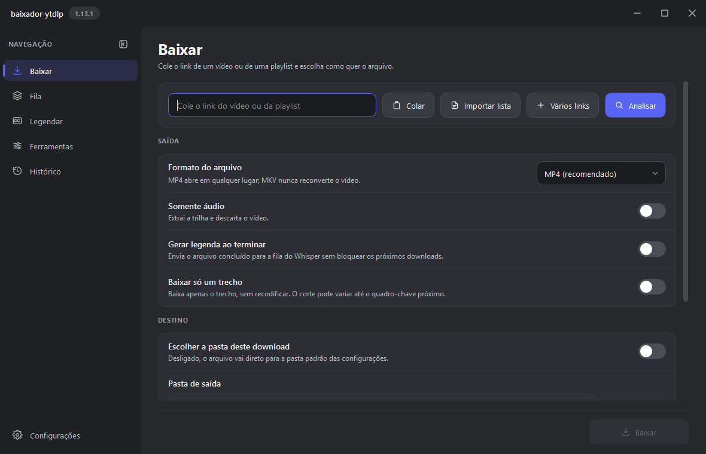
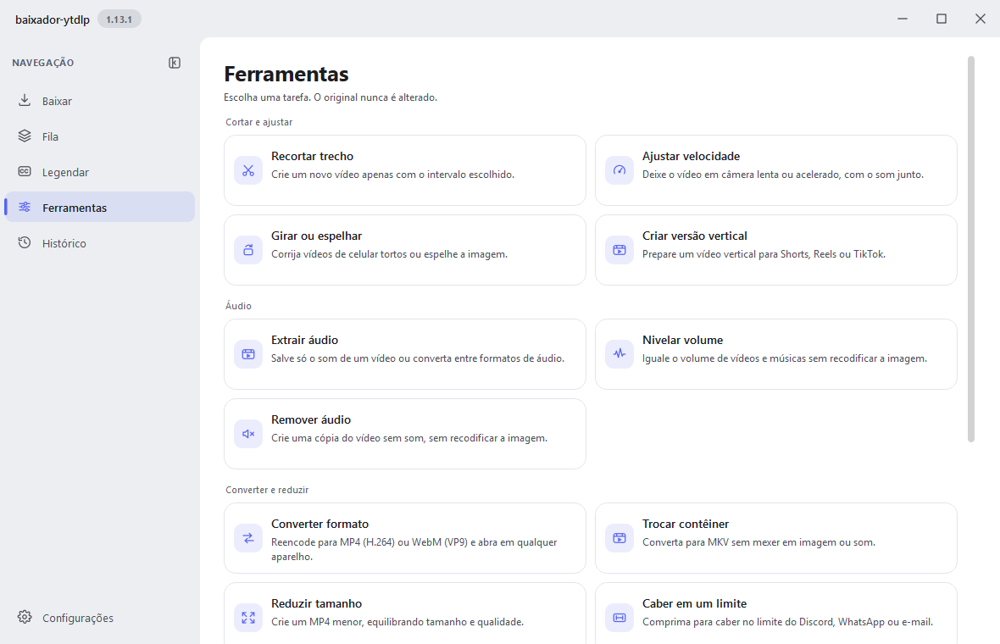
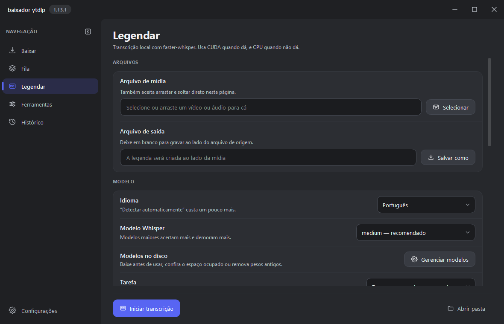
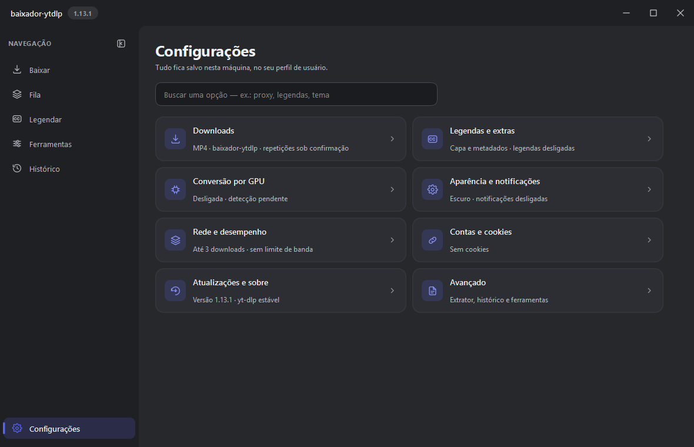

Rápido de verdade
Fragmentos em paralelo e trechos de vídeos longos baixados em partes paralelas, emendadas sem recodificar: uma live de 30 min em 1080p em cerca de 75 s.
Uma interface moderna para o yt-dlp, com transcrição por Whisper e ferramentas de vídeo. Tudo roda no seu computador, com aceleração por GPU, e nada é enviado para a nuvem.


Por que usar
Feito para quem baixa e processa muita mídia e não quer depender de serviços externos.
Fragmentos em paralelo e trechos de vídeos longos baixados em partes paralelas, emendadas sem recodificar: uma live de 30 min em 1080p em cerca de 75 s.
Transcrição, conversão e cortes rodam localmente. Nenhum áudio ou vídeo sai da sua máquina.
NVIDIA (NVENC e CUDA), AMD (AMF e VAAPI), Intel (Quick Sync) e Apple Silicon (VideoToolbox e MLX), com retorno automático para a CPU.
yt-dlp, FFmpeg e Deno vêm das fontes oficiais com SHA-256 conferido, e a validação de certificado TLS nunca é desligada.
Instagram, X, TikTok, Facebook, Reddit, Vimeo, Twitch, SoundCloud e os demais sites que o yt-dlp cobre.
Tema claro e escuro, português e inglês, fila persistente com pausar e retomar e avisos que não atrapalham.
O que faz
Do link ao arquivo final, sem trocar de programa.
Capturas


Download
Os links apontam sempre para a versão mais recente publicada.
Windows 10 ou 11
Mac com Apple Silicon (M1, M2, M3 ou M4)
Ubuntu 22.04+ ou Debian 12+ (x86_64)
Aviso: os arquivos distribuídos ainda não têm certificado de assinatura de código. Windows, macOS ou antivírus podem exibir um aviso de aplicativo não reconhecido. Os arquivos oficiais são os publicados na seção Releases deste projeto.
Primeira abertura: o app baixa yt-dlp, FFmpeg e Deno das fontes oficiais e só baixa de novo quando existe versão nova.
Privacidade e segurança
Nada é enviado a serviços externos além das requisições ao site de origem, às releases do GitHub e às fontes oficiais dos componentes.
Só são instalados quando o fornecedor publica um SHA-256 válido, e o hash é conferido antes de cada execução.
Cookies, histórico e configurações ficam na sua máquina e são removidos do diagnóstico exportado.
Cancelar ou fechar o app encerra a árvore de processos (yt-dlp, FFmpeg, Deno).